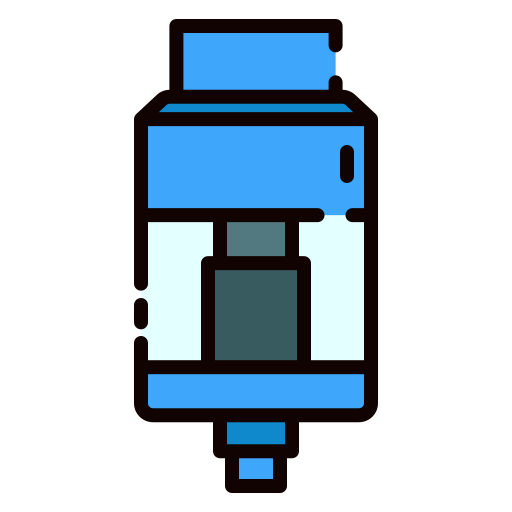

How Millikan bypassed measuring the mass of the droplet directly by using two sequential kinematic states.
At terminal falling velocity (\(v_f\)), downward gravity (\(F_g\)) is balanced by upward buoyancy (\(F_b\)) and drag (\(F_d\)).
Substituting standard formulas:
Finding Radius (\(r\)): By substituting \(m = \frac{4}{3}\pi r^3 \rho\), we can isolate the radius of the invisible droplet purely from its speed:
At terminal rising velocity (\(v_r\)), the upward electric force (\(F_e\)) and buoyancy balance downward gravity and drag.
Substituting the electric force (\(qE\)):
We isolate the electric force to prepare for substitution:
Notice from Phase 1 that the effective weight \((mg - m_{air}g)\) is exactly equal to the falling drag \((6\pi\eta r v_f)\). We can substitute this directly into Phase 2!
Factoring out the drag coefficient gives us the final equation to solve for Charge (\(q\)):
Conclusion: We never needed to calculate the mass directly. The droplet's charge is derived entirely from its radius, the electric field, and its two velocities.